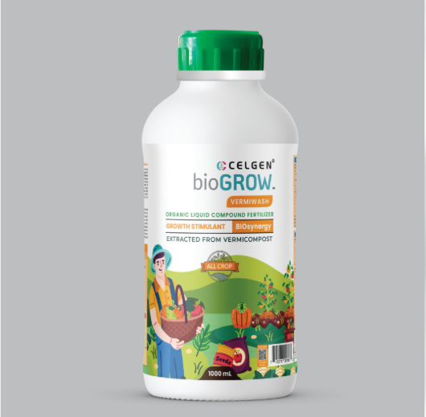
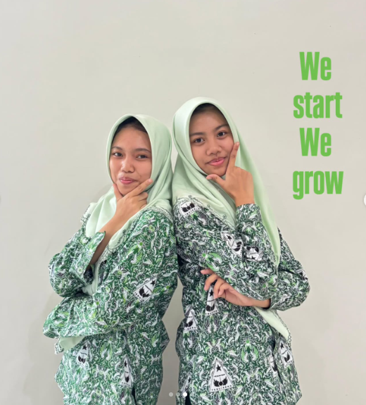

2025 · Artikel penelitian
Abidin, A. Z., Steven, S., Siregar, N. S., Hutahaean, A. C., Graha, H. P. R., dkk.
Extending the shelf life of organic liquid fertilizer from food waste processing based on Masaro technology.
Buka artikel / DOI ↗
Dari limbah, untuk kehidupan yang lebih hijau.
Inovasi pemanfaatan limbah pangan melalui biokonversi berbasis mikroba untuk mendukung pertanian berkelanjutan.
Biokonversi Mikroba
Fermentasi 16 Hari
100% Limbah Pangan
Sayuran & Buah Organik

BIOGROW Liquid Fertilizer
Biokonversi Limbah Sayur & Buah
BIOGROW merupakan produk pupuk organik cair yang dikembangkan melalui pemanfaatan limbah pangan berupa sisa sayuran dan buah. Bahan organik difermentasi dengan bantuan EM4, air cucian beras, dan molase sebagai bagian dari upaya pengelolaan limbah yang lebih bertanggung jawab.
Klik bahan untuk melihat perannya dalam fermentasi:
Berfungsi sebagai bahan baku utama kaya senyawa organik yang akan diuraikan oleh mikroorganisme menjadi bentuk cair yang lebih sederhana.
Limbah bukan selalu akhir dari sesuatu, tetapi dapat menjadi awal dari pemanfaatan baru.
Tiga fokus yang menjadi dasar pengembangan produk.
Memanfaatkan kembali limbah pangan agar memiliki nilai guna.
Menggunakan proses fermentasi berbasis mikroba dalam pengolahan bahan organik.
Mendorong pengelolaan limbah yang lebih bertanggung jawab.
Gambaran singkat tahapan pengolahan dalam penelitian.
Sisa sayuran dan buah dikumpulkan sebagai bahan organik.
Bahan difermentasi selama 16 hari dengan variasi penambahan EM4.
Sampel diamati karakteristik fisik, pH, dan pembacaan kandungan hara menggunakan kit.
Pencampuran & Inokulasi Awal
Sisa sayuran dan buah dicampurkan bersama air cucian beras, molase, serta variasi penambahan EM4 untuk memulai aktivitas mikroba.
Fase Awal Bahan
Potongan bahan organik masih tampak segar dan terpisah dari larutan media fermentasi.
Persiapan Sampel Variasi
Pencatatan kondisi awal tiap perlakuan variasi EM4 sebelum proses fermentasi berlangsung selama 16 hari.

Di balik pengembangan BIOGROW, kami berkolaborasi merancang penelitian biokonversi limbah pangan menjadi pupuk organik cair yang ramah lingkungan dan aplikatif sebagai langkah kecil menuju pengelolaan limbah yang lebih hijau.
Sumber literatur dan referensi yang digunakan dalam penyusunan penelitian BIOGROW.
2025 · Artikel penelitian
Extending the shelf life of organic liquid fertilizer from food waste processing based on Masaro technology.
Buka artikel / DOI ↗2022 · Lembaga
9 Organisasi Sepakat Gabung Bersama Badan Pangan Nasional Kurangi Food Waste di Indonesia.
Buka sumber ↗2021 · Jurnal
Pembuatan dan Upaya Peningkatan Kualitas Pupuk Organik Cair.
Buka artikel ↗2025 · Jurnal
Potensi Pemanfaatan Limbah Organik Rumah Tangga menjadi Pupuk Organik Cair melalui Proses Fermentasi menggunakan Bioaktivator EM4.
Buka artikel / DOI ↗2023 · Jurnal
Pengaruh Penambahan Bioaktivator EM4 dan Molase dalam Pembuatan Pupuk Organik Cair dari Limbah Restoran Khas Bali.
Buka artikel ↗2022 · Jurnal
Pembuatan Pupuk Organik Cair dan Kompos dari Limbah Organik Rumah Tangga.
Buka artikel ↗2024 · Jurnal CEJS
Pembuatan Pupuk Organik Cair dari Limbah Sayuran dan Limbah Cair Tahu dengan Bioaktivator EM4.
Buka artikel / DOI ↗2022 · Jurnal
Pembuatan Pupuk Organik Cair dari Limbah Sayuran dengan Menggunakan Bioaktivator EM4.
Buka artikel / DOI ↗2024 · Artikel ilmiah
Artikel terkait aktivitas mikroorganisme dan biokonversi (rujukan DOI pada laporan penelitian).
Buka artikel / DOI ↗2025 · Jurnal JABB
Edukasi Food Waste untuk Menurunkan Sisa Makanan dan Risiko Gizi di Pondok Pesantren. JABB, Vol. 6 No. 1.
Buka artikel / DOI ↗2023 · Sumber edukasi
The Difference between Food Loss vs Food Waste and How to Avoid It.
Buka sumber ↗Tautan mengarah ke DOI atau laman publikasi/sumber yang tercantum dalam laporan penelitian.
BIOGROW adalah produk pupuk organik cair hasil pengembangan penelitian biokonversi limbah pangan.
Bahan penelitian meliputi sisa sayuran dan buah, EM4, air cucian beras, serta molase.
Penelitian ini belum mencakup uji pertumbuhan tanaman. Efektivitas aplikasi pada tanaman masih memerlukan pengujian lanjutan.
BIOGROW • Dari limbah, untuk kehidupan yang lebih hijau.